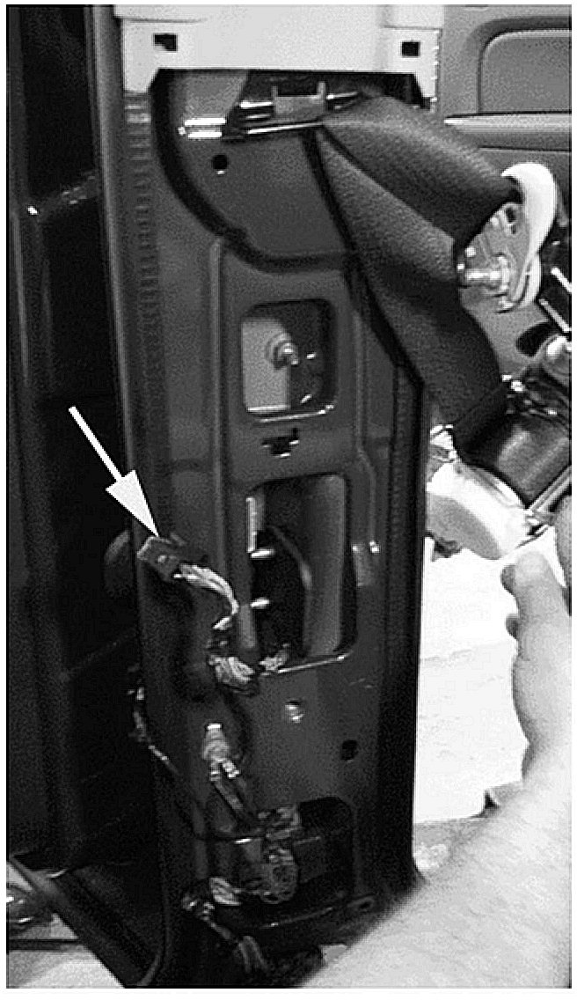
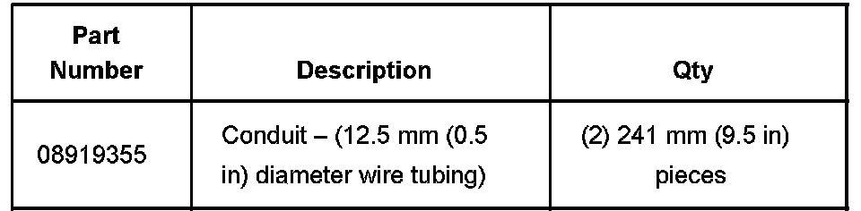
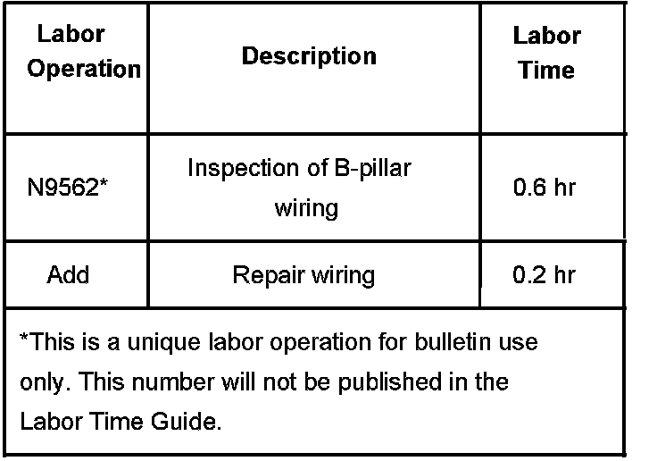

Electrical - Various Electrical System Malfunctions
Bulletin No.: 06-08-45-009Date: October 31, 2006
TECHNICAL
Subject:
Rear Door Locks/Rear Windows/Courtesy Lamps/Rear Speakers Inoperative, Blown Fuse, SIR DTC Codes (Inspect/Repair, Wrap Wire Harness)
Models:
2007 Cadillac Escalade, Escalade ESV, Escalade EXT
2007 Chevrolet Avalanche, Silverado (Crew Cab Only), Suburban, Tahoe
2007 GMC Sierra (Crew Cab Only), Yukon, Yukon Denali, Yukon XL, Yukon Denali XL
Condition
Some customers may comment on one or all of the following conditions:
Rear door locks inoperative
Rear windows inoperative
Door courtesy lamps inoperative or stay on at times
Rear speakers inoperative
Any fuse (related to the rear doors) that is blown/shorted
SIR codes related to the pretensioner
Interior dimming inoperative
Cause
The B-pillar wiring harness around the seat belt retractor may be or become chaffed/damaged. The correction listed below is intended to repair any damage and prevent future concerns.
Correction
This repair operation is intended to be done on both B-pillars.
Remove the lower B-pillar cover.
Disconnect the Supplemental Inflatable Restraint (SIR) connector.
Inspect the wiring harness in the B-pillar around the seat belt retractor.
Make any necessary wiring harness repairs.
Wrap the "entire" harness with electrical tape.
Install conduit tubing around the harness.

Install the lower B-pillar cover.

Parts Information
Warranty Information
The labor operation associated with this bulletin is written for inspection of the B-pillar wiring harness and, if necessary, repair.

For vehicles repaired under warranty, use the table.

Disclaimer